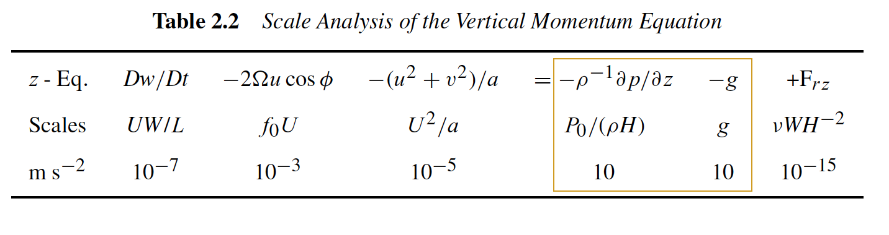
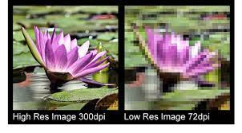

class: center, middle <br/><br/> .title[Oceanografía Dinámica I] .subtitle[Ecuaciones de movimiento] <br/><br/> .author[2025-I] .institution[DOF-CICESE] <br/> .date[22 y 24 de enero 2025] <br/><br/> <img style="width:100%" src="./figures/green_waves.png"> <!-- .note[Created with [{Liminal}](https://github.com/jonathanlilly/liminal) using [{Remark.js}](http://remarkjs.com/) + [{Markdown}](https://github.com/adam-p/markdown-here/wiki/Markdown-Cheatsheet) + [{KaTeX}](https://katex.org)] --> --- name: toc class: left <img style="width:40%" src="./figures/ink.jpg"> #Contenido 1. [Repaso clase pasada](#repaso) 1. [Conservación de masa](#masa) 1. [Conservación de momento](#mmtm) 1. [Ecuación de estado](#estado) 1. [Conservación de energía](#energia) 1. [Conservación de humedad y sal](#trazadores) 1. [Aproximación de Boussinesq](#boussi) <!-- Comment out the next slide if you don't want the Table of Contents link --> --- layout: true .toc[[✧](#toc)] --- name: repaso class: left ## La clase pasada aprendimos que: * Una partícula libre en un plano en rotación seguirá un movimiento circular en el sistema en rotación (**oscilación inercial**). </br></br> * El sentido del movimiento es opuesto al de rotación (horario para $f>0$ y antihorario para $f<0$). </br></br> * El radio de la circunferencia está dado por $V_0/|f|$, donde $V_0$ es la velocidad inicial y $|f|$ es la magnitud del **parámetro de Coriolis** (f=$2\Omega$). </br></br> * El periodo que la partícula tarda en competar una vuelta se conoce como **periodo inercial** y está dado por $T_p=2\pi/f= \pi/\Omega$. --- name: repaso class: left * En 3D, para cada punto sobre la esfera, el vector $\mathbf{f}=2\mathbf{\Omega}$, donde $\mathbf{\Omega}$ es el vector de rotación, se descompone en una componente vertical *parámetro de Coriolis* $f=2\Omega\sin{\varphi}$ (rotación en el plano horizontal) y una horizontal conocida como *parámetro de Coriolis recíproco* $f^*=2\Omega\cos{\varphi}$ (rotación en el plano vertical, efecto despreciable). </br></br> * En el caso 3D, el movimiento horizontal también es circular (oscilaciones inerciales) pero $f=2\Omega \sin{\varphi}$ --- class: left **1. ¿Cuál es el periodo inercial a una latitud de 45N?** a) $T_p=2\pi/f=\pi/\Omega \sin{45} \approx 17$ hrs b) $T_p=2\pi/\Omega= \approx 77$ hrs c) $T_p=2\pi/f=\pi/\Omega \approx 38$ hrs d) $T_p=2\pi/f=\pi/2\Omega \sin{45} \approx 27$ hrs -- **Respuesta: a** --- class: left **2. ¿Cuál es el valor de $f$ y $f^*$ en el Ecuador?** a) $f=0$, $f^*=1$ b) $f=0$, $f^*=2\Omega$ c) $f=1$, $f^*=0$ d) $f=0$, $f^*=0$ e) $f=2\Omega$, $f^*=0$ -- **Respuesta: b** --- class: left **3. ¿Hacia dónde gira una particula libre en el hemisferio sur ($f<0$)?** a) En sentido antihorario b) En sentido horario -- **Respuesta: a** --- --- name: ecs class: left # Ecuaciones de movimiento 1. Queremos establecer las ecuaciones que gobiernan el movimiento de un flujo estratificado en rotación. 2. Una vez establecidas las ecuaciones, queremos simplificarlas (aún más) utilizando la aproximación de Boussinesq. 3. Finalmente tendremos el conjunto completo de ecuaciones que describen a los fluidos geofísicos y podremos empezar a trabajar con ellas. --- class: left ## Conservación de masa El cambio local en la masa dentro de un volumen de control se compensa con la divergencia local del flujo de masa en el volumen: $$\frac{D\rho}{Dt}+\rho\nabla\cdot\mathbf{u}=0,$$ donde $\rho$ es la densidad (en kg$~$m$^{-3}$), $D/Dt$ es la derivada material $(\partial/\partial t + \mathbf{u}\cdot \nabla )$, y $\mathbf{u}=(u,v,w)$ es el vector velocidad. Esta ecuación también se conoce como *ecuación de continuidad*. En un *fluido incompresible* $\rho$ es constante, por lo que $D\rho/ Dt=0$ y la ecuación de continuidad queda como: $$\nabla\cdot\vec{u}=0.$$ .caption[NOTA: La geometria esférica agrega algunos términos de curvatura que vamos a despreciar considerando escalas de movimiento menores a la escala global. Ver Vallis.] --- name: mmtm class: left ## Conservación de momento Segunda Ley de Newton $(\sum{\mathbf{F}}=d\mathbf{p}/dt\approx m\mathbf{a})$, escrita por unidad de masa. Sin rotación: $$\rho\frac{Du}{Dt}=-\frac{\partial p}{\partial x}+\mu\Big(\frac{\partial^2 u}{\partial x^2}+\frac{\partial^2 u}{\partial y^2}+\frac{\partial^2 u}{\partial z^2}\Big)$$ $$\rho\frac{Dv}{Dt}=-\frac{\partial p}{\partial y}+\mu\Big(\frac{\partial^2 v}{\partial x^2}+\frac{\partial^2 v}{\partial y^2}+\frac{\partial^2 v}{\partial z^2}\Big)$$ $$\rho\frac{Dw}{Dt}=-\rho g-\frac{\partial p}{\partial z}+\mu\Big(\frac{\partial^2 w}{\partial x^2}+\frac{\partial^2 w}{\partial y^2}+\frac{\partial^2 w}{\partial z^2}\Big)$$ Recuerden que, de manera general, los términos debidos a las fuerzas de superficie se escriben en términos del tensor de esfuerzos. Aquí utilizamos las ecuaciones consitutivas y obtenemos al término $\partial p_i/\partial x_i$ y la disipación $\mu\nabla^2 u_i$ ¡Esto es una aproximación! --- class: left ## Conservación de momento con rotación * El sistema cartesiano funciona si las escalas espaciales son mucho menores que la escala planetaria ($L<<R_{Tierra}$ Ej. $L < 1000$ km está bien). * Si consideramos escalas más grandes debemos transformar $x$, $y$ y $z$ a un sistema de coordenadas esféricas y los terminos de curvatura que ingnoramos anteriormente entrarán a las ecuaciones. .center[ ] .caption[https://vividmaps.com/map-projections/] --- class: left ## Momento en esféricas y escalas de cada término En forma $\bf{vectorial}$: $$\frac{D\bf{U}}{Dt}=-2\bf{\Omega} \times \bf{U} - \frac{1}{\rho}\nabla P + \bf{g} + \bf{F_r}$$ donde el término $\bf{F_r}$ contiene a las fuerzas de fricción/disipación. Estas ecuaciones funcionan para coordenadas cartesianas o esféricas ($\varphi, \lambda, z$). En esféricas: Definimos $x$ y $y$ como las distancias hacia el **este** y hacia el **norte**, respectivamente, de manera que .center[ $Dx = A \cos{\varphi} D\lambda$ y $Dy = A D\varphi$,] donde $A$ es el radio de la Tierra, $\varphi$ la latitud y $\lambda$ la longitud. --- Entonces, las velocidades al **este**, al **norte**, y **vertical** son: .center[ $u \equiv \frac{Dx}{Dt}$ y $v \equiv \frac{Dx}{Dt}$.] usando las definiciones de $x$ y $y$: .center[ $u \equiv r\cos{\varphi} \frac{D \lambda}{Dt}$, $v \equiv r\frac{D \varphi}{Dt}$, $w \equiv \frac{Dz}{Dt}$] donde $r$ es la distancia al centro de la Tierra ($r \sim A$), $u$ es la velocidad zonal (positiva al este), $v$ la meridional (positiva al norte), y $w$ la vertical (positiva hacia arriba). El sistema (x,y,z) definido así NO es cartesiano, pues las direcciones (vectores unitarios) son función de la posición en la esfera. Esto genera términos extra cuando expandimos los términos en la ec. de momento. --- Después de un poco de talacha, las ecuaciones de momento para las componentes de movimiento hacia el este, hacia el norte y vertical sobre la esfera quedan como: $$\frac{Du}{Dt} - \frac{uv \tan{\varphi}}{A} + \frac{uw}{A} = -\frac{1}{\rho}\frac{\partial P}{\partial x}+ fv - f^*w+F_{rx}$$ $$\frac{Dv}{Dt} + \frac{u^2 \tan{\varphi}}{A} + \frac{vw}{A} = -\frac{1}{\rho}\frac{\partial P}{\partial y}- fv +F_{ry}$$ $$\frac{Dw}{Dt} + \frac{u^2+v^2}{A} = -\frac{1}{\rho}\frac{\partial P}{\partial z}- g + f^*u +F_{rz}.$$ Los términos proporcionales a $1/A$ se conoecn como *términos de curvatura*. Son no lineales y complican el análisis, pero podemos ignorarlos porque son pequeños en escalas sinópticas. --- ## Escalas de los términos de las ecuaciones de momento Esto es un tipo de filtrado de escalas más rápidas y pequeñas. Ej. Escalas características en procesos de mesoescala en el océano: |Símbolo|Valor ~|Escala| |:-:|:-:|:-:| |U|0.1 m s$^{-1}$| velocidad horizontal| |W|10$^{-4}$ cm s$^{-1}$| velocidad vertical| |L|10$^5$ m| longitud horizontal| |H|10$^3$ m| altura| |$\delta P$/$\rho$|10$^0$ m$^2$s$^{-2}$|variaciones de presión horizontal| |L/U|10$^6$ s| tiempo| Para latitudes medias, $f = 2\Omega\sin(45)\sim 2\Omega\cos(45) \approx 10^{-4}$ s$^{-1}$ --- ## De qué tamaño es cada término: .center[ <img style="width:90%" src="./figures/escalas_terminos_mmtm_hor_holton.png"> </br>  ] .caption[tamaño aproximado de los términos de las ecuaciones de momento. Tablas de Holton para la escala sinóptica **atmosférica** (2004), capítulo 2)] --- name: estado class: left ## Ecuación de estado * Relación entre presión y densidad. * Depende del fluido * Distinción entre aire (compresible) y agua (incompresible) Vamos a las notas... --- class: left ## Ecuación de estado LINEAL para agua de mar (incompresibilidad): $$\rho(T,S) = \rho_0(1-\alpha(T-T_0)+\beta(S-S_0))$$ donde $\rho_0$, $T_0$ y $S_0$ son constantes de referencia de presión, temperatura y salinidad; T es la temperatura en $^{\circ}$C o K, S es la salinidad, $\alpha=1.7\times10^{-4}$ K$^{-1}$ es el coeficiente de expansión térmica y $\beta=7.6\times10^{-4}$ es el de contracción salina. .center[ <img style="width:60%" src="./figures/EOS_linear.png">] --- class: left ## ¿Cómo vamos? Llevamos **5 ecuaciones** (3 de momento, 1 de continuidad, 1 ecuación de estado) pero ahora tenemos **7 variables** ($u$, $v$, $w$, $P$, $\rho$, $T$ y $q$). ¿De dónde podemos obtener otras 2 ecuaciones? * Conservación de energía * Conservación de sal --- name: energia class: left ## Conservación de energía $1^{a}$ Ley de la termodinámica La **energía interna** ganada por una parcela de fluido es igual al **calor** que recibe menos el **trabajo mecánico** que realiza. Por unidad de masa y de tiempo esto es: $$\frac{De}{Dt}=Q-W, \textrm{ (1)}$$ donde $e$ es la energía interna, $Q$ es el calor y $W$ es el trabajo hecho por el gradiente de presión. La **energía interna** es una "medida" de la agitación térmica de las moléculas en el fluido y es proporcional a la temperatura: $$e=C_vT, \textrm{ (2)}$$ donde $C_v$ es la **capacidad calorífica** a volumen constante (Ej. aire a nivel del mar y temperatura ambiente $C_v=718$ Jkg$^{-1}$K$^{-1}$. --- ### Término de calor $Q$ En la atmósfera la condensación y evaporación liberan o absorben **calor latente**. Pero dejando de lado termodinámica atmosférica, que es mucho más complicada que esto (ya lo vieron en el módulo 2), el término $Q$ en (1) solo incluye el calor ganado por la parcela debido al contacto con sus vecinas por medio de la difusión. Usando la Ley de Fourier de conducción: $$Q=\frac{K_T}{\rho}\nabla^2T, \textrm{ (3)}$$ donde $K_T$ es **conductividad térmica** del fluido y $\nabla^2$ es el operador laplaciano que en cartesianas es $\partial^2/\partial x^2+\partial^2/\partial y^2+\partial^2/\partial z^2$. --- ### Término de energía mecánica $W$ El trabajo realizado por el fluido es la fuerza debida a la presión $(P/Área)$ por el desplazameinto en dirección de la fuerza. Contando área por desplazamiento=volumen, el trabajo es presión x cambio de volumen, por unidad de masa y tiempo esto es: $$W=P\frac{D\mathcal{V}}{Dt}, \textrm{ (4)}$$ donde $\mathcal{V}$ es volumen por unidad de masa ($1/\rho$). Nota: la fuerza de Coriolis NO realiza trabajo debido a que va en dirección perpendicular al desplazamiento. --- ### Ecuación de energía Sustituyendo los valores de los términos para $e$, $Q$ y $W$ en (1): $$C\_v \frac{DT}{Dt}=\frac{K\_T}{\rho}\nabla^2T-P\frac{D\mathcal{V}}{Dt} = \frac{K\_T}{\rho}\nabla^2T-\frac{P}{\rho^2}\frac{D\rho}{Dt}. \textrm{ (5)}$$ Usando la ecuación de continuidad completa: $$\frac{\partial \rho}{\partial t}+ \frac{\partial (\rho u)}{\partial x} + \frac{\partial (\rho v)}{\partial y}+ \frac{\partial (\rho w)}{\partial z}=0$$ reescribimos al término $D\rho/Dt$: $$\rho C\_v \frac{DT}{Dt}+ P\left(\frac{\partial u}{\partial x}+ \frac{\partial v}{\partial y}+ \frac{\partial w}{\partial z}\right) =K\_T \nabla^2T. \textrm{ (6)}$$ --- name:trazadores class: left ## Conservación de sal Una parcela de agua conserva su cantidad de sal $S$ salvo por redistribuciones debidas a la difusión. $$\frac{DS}{Dt}=\kappa_s \nabla^2S$$ donde $\kappa_s$ es el coeficiente de difusividad salina. Usando esta aproximación, ¿cómo se modificacn las ecuaciones que llevamos hasta ahora? --- class: left ## El término de fricción en las ecuaciones de momento * No hablamos mucho de estos términos, pero los flujos geofísicos están en estado **turbulento**. * Nos interesa encontrar ecuaciones para el comportamiento estadístico (Reynolds: Ej. $u=< u > +u'$, promedio + variaciones) (Cushman cap. 4.1). * Nuestras ecuaciones funcionan para las $< u >$, $< v >$, $< w >$, ... --- * La viscosidad molecular no refleja la disipación a escala de nuestras ecuaciones (filtradas) y la sustituimos por una **viscosidad equivalente** que incluya procesos disipativos y turbulentos que no podemos resolver en nuestra escala (Ej. microescala)  .caption[Imagen de [contemporary comunications inc.](https://ccideas.com/chatter/high-resolution-images-vs-low-resolution-images-a-short-primer-for-beginners/)] --- class: left # Referencias * Holton, Introduction to Dynamic Meteorology, 4ta edición, Capítulo 2 * Cushman-Roisin y Beckers, Introduction to Geophysical Fluid Dynamics, 2da edición, Capítulo 3.